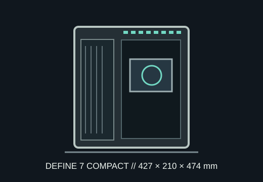

[ MODEL IDENTIFICATION // FRACTAL DESIGN DEFINE 7 COMPACT ]
Fractal Design Define 7 Compact
A compact sound-dampened ATX tower with external dimensions of 427 × 210 × 474 mm, 341 mm GPU length and support for up to a 360 mm front radiator.

MODEL NOTE: This entry is the Define 7 Compact (FD-C-DEF7C-01 charcoal-black family), not the larger Define 7, Define 7 XL or Meshify 2 Compact.
Dimensions & fit specifications
| External dimensions | 427 × 210 × 474 mm (L × W × H); 39.3 L volume; 9.2 kg net weight. |
|---|---|
| Motherboards | ATX, microATX and Mini-ITX. |
| GPU / CPU cooler / PSU | GPU length up to 341 mm; CPU cooler height up to 169 mm; ATX PSU up to 200 mm, subject to drive-cage placement. |
| Radiators | Front: up to 360 mm (also 280/240/140/120); top: up to 240 mm; rear: 120 mm. No lower radiator mount is specified. |
| Drive mounts | Two 2.5/3.5-inch combination positions under the shroud and two dedicated 2.5-inch mounts behind the motherboard tray. |
| Clearance interaction | Front radiator and fan depth reduce GPU length; drive-cage position can constrain PSU/cable space. Use the official fit table for non-default storage arrangements. |
Compatibility & preservation
The 341 mm GPU number is the unqualified maximum. A thick front radiator and fans occupy the same front-to-back envelope and reduce usable graphics length. The Define 7 Compact is notably narrower in component volume than ATX full towers; check cooler height and side-panel closure before fitting tall heatpipe towers.
- Preserve sound-damping panels, top ventilation cover, front filter, drive trays and the cable-management channel.
- Set the storage bracket before installing a long PSU; verify cable bend behind the drive cage.
- Use the correct Compact manual, not the similarly named Define 7 manual.
Manufacturer sources
- Fractal Design — Define 7 Compact product specificationsManufacturer source for external size, supported boards, GPU/cooler limits, drives and radiator capacities.
- Fractal Design — Define 7 Compact manual (PDF)Manufacturer installation guide with component and bracket diagrams.